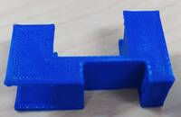
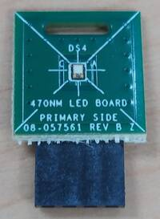
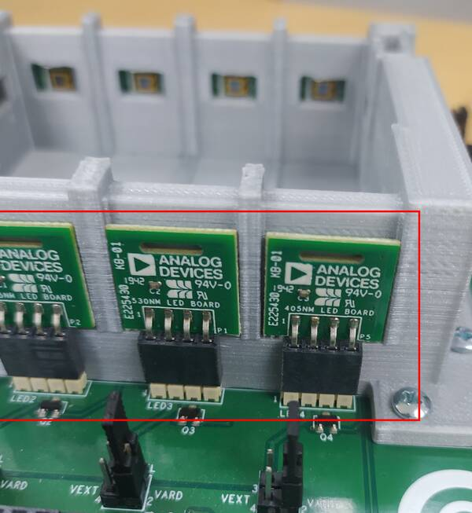
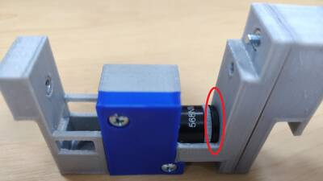

EVAL-CN0503-ARDZ
Multiple Parameter Optical Liquid Measurement Platform
CN0503 is a reconfigurable multi-parameter optical liquid measurement platform capable of performing colorimetry, turbidity, and fluorometry. The design minimizes complexity by using a highly integrated multimodal sensor front end capable of simultaneously driving four LEDs, and synchronously measuring four pairs of photodiodes at a flexible sampling rate. Furthermore, the front end has on-chip digital filters and high ambient light rejection which allow the platform to operate regardless of environmental lighting conditions.
Materials Needed
Here are the list of items (and their photos) included in EVAL-CN0503-ARDZ.
Qty |
Item Name |
Description |
Image |
|---|---|---|---|
1 |
Main Board |
CN0503 Main PCB with ADPD4101 |
To be updated |
12 |
LED Boards |
Accessory PCB with onboard LED (wavelengths: 365nm, 405nm, 430nm, 470nm, 530nm, 568nm, 615nm, 630nm + 4 spare boards) |
|
4 |
Transmit Photodiode (PD) Boards |
Accessory PCB with onboard Photodiode |
|
2 |
Fluorescent Photodiode (PD) Boards |
Accessory PCB with onboard Photodiode |
|
1 |
Mounted Base |
3D Printed PLA Fixture |
|
1 |
Cuvette Holder |
3D Printed PLA Fixture |
|
1 |
Beamsplitter Cover |
3D Printed PLA Fixture |

|
1 |
Lens Cover |
3D Printed PLA Fixture |
|
1 |
Cuvette Holder Cover |
3D Printed PLA Fixture |
 |
5 |
Cuvettes |
Type 1FLP Disposable Macro Cuvettes UV Plastic (10mm Lightpath) |
|
1 |
Condenser Lens |
10mm Dia. x 6.6mm FL, Uncoated Molded Aspheric Condenser Lens |

|
1 |
Beamsplitter |
12.5 x 17.5mm, 50R/50T, Plate Beamsplitter |
|
1 |
Fluorescent Filter |
SCHOTT GG-475, 12.5mm Dia., Longpass Filter |
|
3 |
S1 Screw |
0.7’’ 4-40 Phillips Pan Head Machine Screw |
|
12 |
S2 Screw |
0.575’’ 4-40 Phillips Pan Head Machine Screw |
|
1 |
S3 Screw |
1.0’’ 4-40 Phillips Pan Head Machine Screw |
|
16 |
Hex Nut |
4-40 Hex Nut |
|
4 |
M1 Magnet |
D41 magnet |
|
1 |
M2 Magnet |
D52 magnet |
|
6 |
Plastic Standoffs and Plastic Screws |
Plastic Standoffs and Screws |
|
1 |
Neutral Density Filter (Optional, not included) |
Unmounted Ø1/2†Absorptive ND Filter, Optical Density: 1.0 |
|
1 |
Narrowband Transmit Filter (Optional, not included) |
568nm CWL, 10nm FWHM, 12.5mm Mounted Diameter |
LED and Photodiode Boards
The CN0503 supports 4 channels or paths of light which can be configured for different types of optical measurements. The 2 channels at the sides are capable of measuring light intensity reflected at 90 degrees from the liquid sample to support measurements for turbidity, fluorescence, etc. The LED boards placed in each of the 4 channels are interchangeable and natively support 8 different wavelengths. Additional spare boards are available to accommodate LEDs with other wavelengths.
LED Boards
There are 12 LED boards listed below which are included in CN0503 covering 8 different wavelengths, 2 spare boards for custom Lite-On LEDs, and 2 spare boards for Lumiled LEDs.
LED Board |
Image |
|---|---|
365nm wavelength LED Board |
|
405nm wavelength LED Board |
|
430nm wavelength LED Board |
|
470nm wavelength LED Board |
 |
530nm wavelength LED Board |
|
568nm wavelength LED Board |
|
615nm wavelength LED Board |
|
630nm wavelength LED Board |
|
Spare Lite-on LED Board |
|
Spare Lumiled LED Board |
Photodiode (PD) Boards
There are a total of 6 PD boards used in CN0503, 4 Transmit PD Boards and 2 Fluorescent PD Boards. The Transmit PD Boards are used to measure light intensity passing through the liquid sample. The Fluorescent PD boards are used to measure light intensity reflected at 90 degrees to the side from the light sample.
PD Board |
Image |
|---|---|
Transmit PD Board |
|
Fluorescent PD Board |
Assembling the Mechanical Fixtures
CN0503 uses 3D printed mechanical fixtures to enable four directed light paths to the liquid sample held in a Cuvette. The mechanical fixtures can be classified into two separate objects: the Mounted Base and the Tower. The Mounted Base is capable of holding four Towers which are freely interchangeable, as well as two Fluorescent Filters. The Tower holds the Cuvette, which contains the liquid sample, and optical glass items: a Condenser Lens, a Neutral Density Filter, a Narrowband Transmit Filter, and a Beamsplitter. Below are two videos showing the assembly of the base and tower, respectively.
Assembling the Base
Mounting the Base
A Mounted Base fits on top of the Main Board by following the outlined position in the silkscreen. At its bottom, attach 4 M1 magnets to the provisions as shown below.
Important
Watch out for these magnets as they may fall off when placing the Mounted Base on top of the Main Board.
The Mounted Base will fit snugly between the LED and PD connectors.
Secure the Mounted Base to the Main Board using 10 S2 Screws and 10 Hex Nuts at the holes at its sides as shown below.
Connecting the LED and Photodiode (PD) Boards
The LED Boards are drawn with a huge ‘X’ on the silkscreen which marks the center of the area of interest or the active area of the LED. To mount the LED Boards, face the top of the board with the LED facing towards the small window of the Mounted Base and attach the 4-pin female connectors to the jumper headers marked LED as shown below.
Important
Be sure to check if the ‘X’ mark is centered at the middle of the small window of the base.
To mount the photodiode (PD) boards, face the top of the board with the photodiode facing towards the small window of the base and attach the 4-pin female connectors to the jumper headers marked PD as shown below.
Important
The two Fluorescent PD Boards should be placed at opposite sides of the base. The exact centering of the photodiode is not crucial.
Tip
To replace or remove the PD and LED boards, pull the the notch in each board using a flat screw driver or fingernail to lift it up from the jumper headers.
Inserting the Flourescent Filters
Two Fluorescent Filters can be placed in the square slot in front of each Fluorescent PD Board as shown below.
{kind=link}
Assembling the Tower
The tower holds the optical glass items and the cuvette which holds the liquid sample. This section details how each of these items are assembled into position to form the light path and also, the 3D printed mechanical fixtures which hold them in place (Cuvette Holder, Cuvette Holder Cover, Beamsplitter Cover, and Lens Cover).
Tip
Following the proper order of steps to assemble the tower makes it easier to do as well as prioritizes the important optical glass pieces.
Securing the Beamsplitter
The Beamsplitter is used to direct the light path to both the liquid sample in the Cuvette as well as the reference photodiode located below it. It is angled at 45 degrees with respect to the light path and should be held tightly in place. Slight movements of the Beamsplitter will affect the measurement ratios obtained from the transmit photodiode and reference photodiode.
Starting with the Cuvette Holder, insert two Hex Nuts to each of the two circular depressions as shown below. These should be completely pressed and held tight to the depression to avoid the hassle of them coming off later.
Insert the Beamsplitter in the angled 45 degree slit. Be careful in applying pressure as this may damage the part.
Secure the Beamsplitter with the Beamsplitter Cover as shown below.
Screw the Beamsplitter to the Cuvette Holder using 2 S1 Screws at the two holes as shown below. Be sure to drive the screws in until the head no longer protrudes from the depression.
Tip
Check for slight movements of the Beamsplitter by listening for clicking sounds when you shake the Cuvette Holder.
Securing the Condenser Lens
The Condenser Lens is used to focus and direct the light from the LED through the tower and form the light path. Thus, it is important that the Condenser Lens be positioned properly and tightly secured so that no slight movements occur.
Attach 2 Hex Nuts to each of the two circular depressions on the Cuvette Holder as shown below. These should be completely pressed and held tight to the depression to avoid the hassle of them coming off later.
Place the Condenser Lens on the Cuvette Holder. This will be easier to do by rotating the Cuvette Holder vertically so that the Condenser Lens will drop in position.
Press the Lens Cover to the Cuvette Holder and screw it in place using an S2 Screw at the bottom hole (marked green) and an S1 Screw at the top hole (marked red) as shown below.
Tip
Check for slight movements of the lens by listening for clicking sounds when you shake the Cuvette Holder.
Adding a Narrowband Transmit Filter and Neutral Density Filter (Optional)
Note
This step is typically not required, because the EVAL-CN0503-ARDZ kit does not contain these components. Both the Narrowband Transmit Filter and Neutral Density Filter are optional items which can be added to the optical path if your application requires it.
The Narrowband Transmit Filter is used to select specific wavelengths of light from a wideband LED. Place the filter into the Cuvette Holder as shown below. The placement does not need to be as secure and tight as the Beamsplitter and Condenser Lens.
The Neutral Density Filter is used to decrease the light intensity for a wide range of wavelengths. For instances wherein the LED light intensity easily saturates the photodiode current input to the ADPD4101, adding the Neutral Density Filter will help decrease the input current range.

Placing the Cuvette Cover
The Cuvette Cover secures the hold for the Cuvette and shields the measurement light path from external sources. It also prevents the optional filters from being knocked out of the Cuvette Holder. Thus, it is necessary to lock the Cuvette Holder as detailed below.
Insert a Hex Nut in the depression in the Cuvette Cover. This should be completely pressed and held tight to the depression to avoid the hassle of it coming off later.
Place the Cuvette Cover on top of the Cuvette Holder as shown below.

Secure the Cuvette Cover using an S3 Screw at the specified hole shown below.
Placing the Cuvette
The Cuvette can easily be added to the Cuvette Holder as shown below.
Note
(Optional) The Cuvette Holder is a tight fit for 10mm by 10mm Cuvette. When using a smaller-sized cuvette, a provisional screw hole can be used to press against the Cuvette and secure it.
Remove the Cuvette Cover and insert a Hex Nut in the depression in the Cuvette Holder as shown below. This should be completely pressed and held tight to the depression to avoid the hassle of it coming off later.
Replace the Cuvette Cover and attach an S2 Screw at the specified hole in the Cuvette Holder as shown below. The depth of the screw can be adjusted to increase or decrease the tightness of the hold.
Video Guides
Unboxing
Assembly Video
Basic Fluorescence Demo
Mounting the Tower to the Base
The Mounted Base accommodates up to a maximum of 4 Towers.
Towers are interchangeable and can be placed in any of the 4 positions. To attach the Tower to the Mounted Base, it should hang from the top of the walls of the base. Slight pressure may be needed to fully push the Tower down.
Jumper Settings
The CN0503 has ten jumper positions which configure different settings as shown below. The default shunt positions are highlighted.
1.8V LDO Enable
P1.8V enables the 1.8V LDO supply which sources its input voltage from the Arduino 3.3V pin. By default, a shunt is placed in P1.8V.
P1.8 Shunt |
LDO Status |
Image |
|---|---|---|
With Shunt (Default) |
LDO Enabled |
|
No Shunt |
LDO Disabled |
I/O Voltage Selection
IOSEL selects the source of the logic level voltage for the ADPD4101. By default, a shunt is placed connecting Pins 1 and 2.
IOSEL Shunt Position |
Logic Level Voltage Source |
Image |
|---|---|---|
ARD Position |
Arduino IOREF pin |

|
EXT Position |
EVAL-ADPDUCZ 1.8V |
LED Supply Selection
There are 4 jumper selection headers to set the supply source of each of the four LED connections. Each follow the same selection rules for shunt placement. By default, a shunt is placed connecting pins 1 and 2 for all 4 jumper headers.
LD1SEL Shunt Position |
Source of LED1 supply |
Image |
|---|---|---|
VARD Position Connecting pins 1 and 2 |
Sourced from Arduino 5V |

|
VEXT Position Connecting pins 3 and 4 |
Sourced from EVAL-ADPDUCZ VBOOST |
LD2SEL Shunt Position |
Source of LED2 supply |
Image |
|---|---|---|
VARD Position Connecting pins 1 and 2 |
Sourced from Arduino 5V |

|
VEXT Position Connecting pins 3 and 4 |
Sourced from EVAL-ADPDUCZ VBOOST |
LD3SEL Shunt Position |
Source of LED3 supply |
Image |
|---|---|---|
VARD Position Connecting pins 1 and 2 |
Sourced from Arduino 5V |
|
VEXT Position Connecting pins 3 and 4 |
Sourced from EVAL-ADPDUCZ VBOOST |
LD4SEL Shunt Position |
Source of LED4 supply |
Image |
|---|---|---|
VARD Position Connecting pins 1 and 2 |
Sourced from Arduino 5V |
|
VEXT Position Connecting pins 3 and 4 |
Sourced from EVAL-ADPDUCZ VBOOST |
Tip
Each LED is connected to a transistor which protects the LED drivers of the ADPD4101 from overvoltage.
LED Channel |
Shunt Position |
LED Power Source |
Image |
|---|---|---|---|
LD1SEL |
VARD Position Connecting pins 1 and 2 |
Sourced from Arduino 5V |
|
VEXT Position Connecting pins 3 and 4 |
Sourced from P8 VBOOST |
||
LD2SEL |
VARD Position Connecting pins 1 and 2 |
Sourced from Arduino 5V |
|
VEXT Position Connecting pins 3 and 4 |
Sourced from P8 VBOOST |
||
LD3SEL |
VARD Position Connecting pins 1 and 2 |
Sourced from Arduino 5V |
|
VEXT Position Connecting pins 3 and 4 |
Sourced from P8 VBOOST |
||
LD4SEL |
VARD Position Connecting pins 1 and 2 |
Sourced from Arduino 5V |
|
VEXT Position Connecting pins 3 and 4 |
Sourced from P8 VBOOST |
Photodiode Selection
There are 4 photodiode selection headers available to the two side light paths. These 2 light paths have the option to use a fluorescent photodiode located at right angles from the light path. The combination of which photodiodes to be used by the ADPD4101 can be configured by two selection headers, one for each input channel. Each selection header requires two shunts to configure, to connect both anode and cathode of the photodiode.
P1ASEL Shunt Positions |
Photodiode Connected to the First Input Channel |
Image |
|---|---|---|
0 DEG Position / Connecting pins 1 and 3 / Connecting pins 2 and 4 |
Transmit photodiode is connected to the first input channel |

|
90 DEG Position / Connecting pins 3 and 5 / Connecting pins 2 and 6 |
Fluorescent photodiode is connected to the first input channel |
P1BSEL Shunt Positions |
Photodiode Connected to the Second Input Channel |
Image |
|---|---|---|
90 DEG Position / Connecting pins 1 and 3 / Connecting pins 2 and 4 |
Fluorescent photodiode is connected to the second input channel |
|
REF DEG Position / Connecting pins 3 and 5 / Connecting pins 2 and 6 |
Reference photodiode is connected to the second input channel |

|
P4ASEL Shunt Positions |
Photodiode Connected to the First Input Channel |
Image |
|---|---|---|
0 DEG Position / Connecting pins 1 and 3 / Connecting pins 2 and 4 |
Transmit photodiode is connected to the first input channel |
|
90 DEG Position / Connecting pins 3 and 5 / Connecting pins 2 and 6 |
Fluorescent photodiode is connected to the first input channel |
P4BSEL Shunt Positions |
Photodiode Connected to the Second Input Channel |
Image |
|---|---|---|
90 DEG Position / Connecting pins 1 and 3 / Connecting pins 2 and 4 |
Fluorescent photodiode is connected to the second input channel |
|
REF DEG Position / Connecting pins 3 and 5 / Connecting pins 2 and 6 |
Reference photodiode is connected to the second input channel |
Arduino Connection
The CN0503 stacks on top of the EVAL-ADICUP3029 or any Arduino microcontroller using the PWMH, PWML, POWER, and ANALOG headers. You will also have to remove the stand-offs from the CN0503 as shown below.
Demo Hardware Setup
This section details the hardware setup of CN0503 for a demonstration showing 4 different experiments in each optical path, utilizing colorimetry (absorbance measurement), turbidity, and fluorescence measurement. Below is a general block diagram of the setup.
Listed in the table below are the LED Boards and optional optical glass components used in each path.
Item |
Optical Path 1 |
Optical Path 2 |
Optical Path 3 |
Optical Path 4 |
|---|---|---|---|---|
LED Boards |
365nm LED Board |
430nm LED Board |
615nm LED Board |
530nm LED Board |
Fluorescent Filters |
Used |
Not Used |
Not Used |
Not Used |
Natural Density Filters |
Not Used |
Not Used |
Not Used |
Not Used |
Narrowband Transmit Filters |
Not Used |
Not Used |
Not Used |
Not Used |
The jumper configuration of the CN0503 for this setup is shown below.
Optical Path 1
In optical path 1, the experiment shows the detection of quinine in tonic water using fluorescence measurements. Optionally, you can also use samples of soda water and de-ionized water for comparison.
Optical Path 2
In optical path 2, the experiment shows pH measurement by using colorimetry to detect changes the solution through the bromothymol blue indicator. As pH changes from an acidic level to a neutral and basic level, bromothymol blue changes color from yellow to blue. A yellow colored solution will block 430nm light while a blue colored solution will allow it to pass. The change in pH can be done using a simple aquarium kit.
Optical Path 3
In optical path 3, the experiment shows nitrate detection using colorimetry. Using the API reagent found in nitrate test kits, a solution with a higher concentration of nitrate turns into a darker shade of red. As a result, the degree of absorbance of 615nm light decreases with the increasing nitrate concentration.
Optical Path 4
In optical path 4, the experiment shows turbidity measurements of cloudy water made by adding a a drop of milk and de-ionized water using 530nm light.
Schematic, PCB Layout, Bill of Materials
Download
EVAL-CN0503-ARDZ Design & Integration Files
Schematics
PCB Layout
Bill of Materials
Allegro Project
3D Printed Files (Mechanical Base and Cuvette Holder)
Note
ADI has ordered additional assembled Cuvette Holders from Shapeways and received high-quality prints back, although there are certainly other vendors capable of printing these files. ADI is not responsible for any printing mishaps or issues with the printing vendors; we are merely providing our feedback.